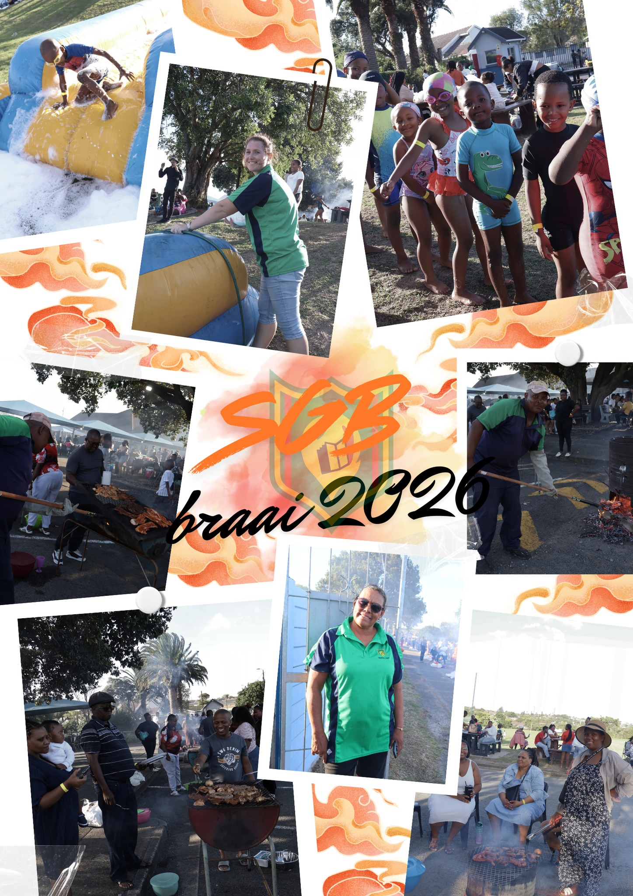
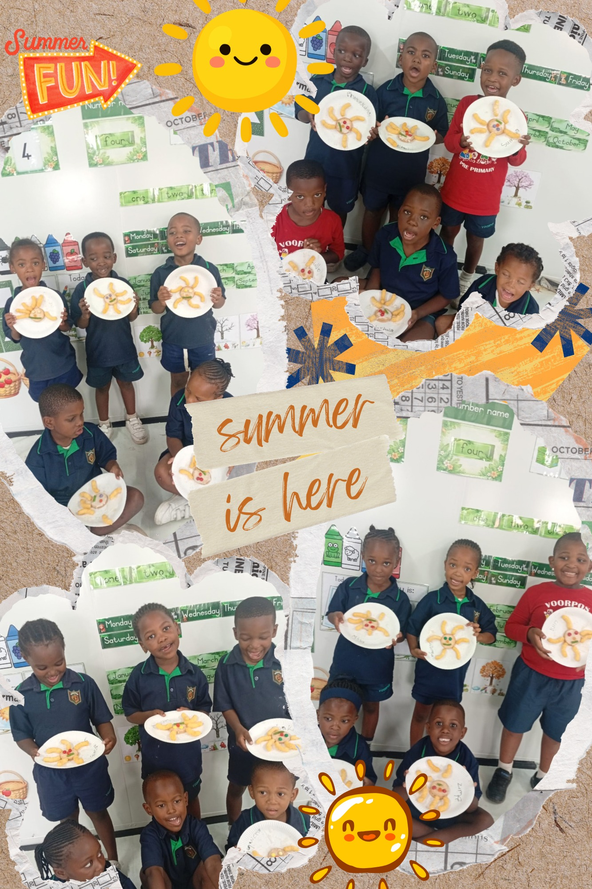

Voorpos Primary
APPLICATION FORMS
Voorpos Primary
APPLICATION FORMS
Life at Voorpos Primary
At Voorpos Primary we believe that school is more than just learning.
Our culture promotes respect, teamwork, creativity and leadership.
Our School Values
Respect
We respect ourselves, our teachers and our community.
Teamwork
We work together to support and encourage each other.
Leadership
We develop young leaders who inspire others.
Responsibility
We take pride in our actions and our learning.
Student Life
At Voorpos Primary, student life goes beyond the classroom. We provide a balanced environment where learners grow academically, creatively, and socially. Through a variety of activities, we encourage curiosity, teamwork, and confidence, helping every child develop their full potential.
Through these activities, friendships are built, talents are discovered, and a strong sense of belonging is created — making Voorpos Primary a true family.



Art & Academics
Fun academic activities that encourage learners to explore.


Music & Sport
Creative expression through music and sport.
Outdoor Entertainment
Chess club, reading club and leadership clubs.
"Growing Together as a School Community"